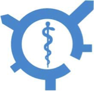

<div class="container">
    <div class="row">
        <div id="speaker-detail" class="col-lg-6 col-lg-offset-3">
            <div class="row">
                <button title="Close (Esc)" type="button" class="mfp-close">×</button>
                <div class="col-md-4 col-lg-4">
                    
                    <br />
                </div>
                <div class="col-md-8 col-lg-8">
                    <h3>Roundabout Therapeutics</h3>
                    <p>Multi‐drug resistant infections in both the hospital and community settings have reached crisis proportions. Nearly 2 million patients will contract one of these infections each year, resulting in high morbidity, extended hospital stays, and patient deaths. MDR infections kill more people per year in the US than breast cancer and prostate cancer combined. New compounds with novel antibiotic mechanisms are desperately needed to combat this growing problem.
Through careful study of the basic processes in resistant bacteria, Roundabout has discovered a conserved metabolic pathway that contributes to bacterial pathogenicity. Targeting this pathway affects virulence factors involved in bacterial pathogenicity. Years of research in the academic setting has created the technical foundations for Roundabout. The team has designed a novel screen and identified two compounds that demonstrate activity against Pseudomonas aeruginosa infection. These are both known compounds that have not previously been used as anti-infectives and Roundabout is evaluating them as re-purposing candidates.
With chemical molecules, screening platform and accumulated know-hows, Roundabout aim to develop a first-in-class anti-infective agent and bring it to IND or Phase I trials in the next few years.
</p>
                </div>
            </div>
        </div>
    </div>
</div>
